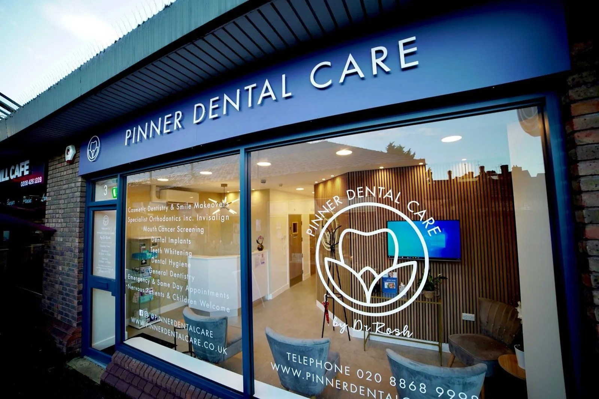

Visit
The practice is at 3 Barters Walk, next door to Sainsbury’s, a three-minute walk from Pinner Underground station.
Getting here
Three minutes from the station.
-
Address
3 Barters Walk, Pinner HA5 5LU
Next door to Sainsbury’s.
-
By tube
Pinner station, Metropolitan line
A three-minute walk. Leaving the station, head south-east on Station Approach towards Bridge Street, then turn left onto Barters Walk.
-
By bus
Routes H11 and H12
The closest stop is Pinner Station (Stop C), about three minutes’ walk.
-
Telephone
020 8868 9998
Out of hours: 07483 911127

Opening hours
| Monday | 8:00am – 6:00pm |
|---|---|
| Tuesday | 8:00am – 6:00pm |
| Wednesday | 8:00am – 6:00pm |
| Thursday | 8:00am – 6:00pm |
| Friday | 8:00am – 6:00pm |
| Saturday | 9:00am – 4:00pm |
| Sunday | Closed |
Hours may vary around public holidays. Ring the practice to confirm before travelling, and for urgent problems over a holiday period get in touch and they will do their best to accommodate you.
Something broken or hurting?
There is an out-of-hours number as well as the practice line.